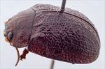
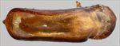
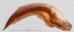
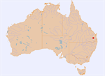

Click on images to enlarge
{kind=link}

Male, Tanduringie, S.E. Queensland
{kind=link}

Aedeagus, dorsal view (Tanduringie, SE Qld)
{kind=link}

Aedeagus, lateral view (Tanduringie, SE Qld)
{kind=link}

Name
Trachymela sp. Ta64
Reference specimen
1997-373, Tanduringie, SE Queensland.
Adult Description
Length: ♂ 6.43 mm (n=1), ♀ unknown.
Note: Description is based on a single male specimen.
Colouration:
- Head: frons dark brown, clypeus and area around antennal insertions and adjacent to eyes black, labrum yellow-brown, mandibles completely black; antennomeres 1–3 light brown, 4–6 grading towards dark brown, 7–11 concolorous with 6.
- Pronotum: discal area dark brown, slightly darker shade than rear of head, with parts of lateral edge of disc vaguely darker, grading towards a slightly lighter shade towards lateral margins with lateral edge partially black.
- Scutellum: brown, concolorous with adjacent part of pronotum.
- Elytra: almost uniformly dark brown, concolorous with or fractionally darker than pronotal disc with a few indistinct flecks of slightly lighter colour, these being along anterior margin between humeral callus and scutellum, along lateral margin and in middle of antero-median depression; punctures are concolorous with interstices, humeral callus concolorous with surrounding area.
- Venter & Legs: venter black, 5th abdominal ventrite is a lighter shade in posterior half, elytral epipleura black.
- Cuticular Wax: unknown, but remnants on the single known specimen indicate a 'Marginal' distribution, with concentrations along lateral margins and in post-basal depression of elytra.
Morphology:
- Head: punctures uneven in size (pd ≈ 1–2.5×ef) and unevenly but densely distributed. Antennae short (AL/BL: ♂ 40.4%, ♀ unknown), filiform.
- Pronotum: almost evenly curved transversely to near lateral edges where it becomes quite markedly explanate, foveal depression very weak, epidermis near centre slightly elevated in a broad circular area, discal area with surface very slightly uneven, nitid, and puncturation clearly impressed with punctures of similar size to the larger on head, quite evenly distributed and relatively dense (spacing ≈ 1.5–2pd), becoming noticeably coarser towards lateral margins. Front margins join much thinner lateral margins in a smoothly rounded right-angle, with lateral margin then curving smoothly and gradually towards rear margin and becoming much thicker from about middle, broadest at > 3/4 of distance to posterio-lateral angle.
- Scutellum: quite densely punctured, with punctures similar in size or fractionally smaller than on adjacent area of pronotum.
- Elytra: viewed laterally, quite evenly rounded over much of surface until close to apex and relatively flat (H/L: ♂ 0.39, ♀ unknown), where radius of curvature increases noticeably, greatest height a little in front of or near middle of elytral margin. Surface smoothly and evenly curved over 3/4 of length longitudinally, then curvature increases towards apex, almost evenly curved transversely, antero-median depression present but shallow, punctures surrounded by very convex interstices, closely spaced and relatively evenly distributed, interstices are convex and give the surface a quite uniform granular appearance, a few small relatively inconspicuous elevated verrucae are scattered mostly posterior to antero-median depression, punctures are all but obscured by the granular surface, elytral suture not carinate, posterior 20% of marginal area strongly concave, surface discontinuous under humeral callus. Vertical extension of epipleura relatively small (HCE/PW = 0.31).
- Venter: prosternal process narrowing anteriorly, closed anteriorly, at most a very sparse scatter of setae present along prosternal process and on mesoventrite, a single long seta present on anterior, median and posterior trochanters; front edge of metaventrite beveled, flat; inner edge of posterior of epipleura lacking setae.
Male Genitalia (Aedeagus):
- Dimensions: short (LPE = 35% BL).
- Dorsal view: sides slightly sinuate, narrowing from basal sulcus and then widening again with maximum width around middle of ostium (WPE = 0.27 × LPE) from where sides converge smoothly and rapidly towards apex, tip rounded triangular and small, dorsal surface lightly sclerotized, dorso-median channel present, ostium relatively large.
- Lateral view: curved fairly tightly just past basal sulcus, then evenly and very slightly curved until close to apex where curvature increases slightly, tip deflexed.
Immature Stages
Unknown.
Similar species
- Ta21: a small specimen of this species could be mistaken for Ta64 at first glance, due to its dark colouration and the very similar disposition of the cuticular wax. The much smaller size of Ta64, as well as its strongly punctured scutellum and the lack of a common black area around the elytral summit will in part distinguish it from that species. Its aedeagus is very similar in shape to that of Ta21, but is slighly longer (LPE/BL is about 8% larger than expected for a similar-sized specimen of Ta21).
Notes
- Distribution & Abundance: known only from Tanduringie, SE Queensland (a single male specimen). However, it is very possible that some of the smaller specimens currently included in Ta21 are in fact this species.
- Host Associations: collected from Eucalyptus sp.
Copyright © 2026. All rights reserved.